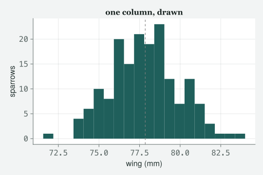
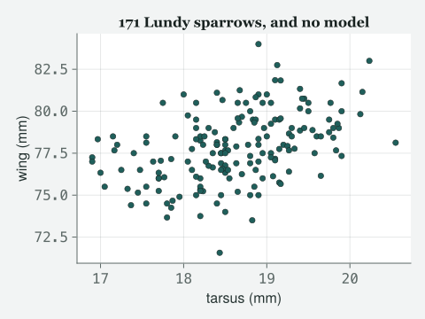
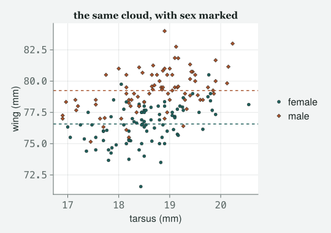
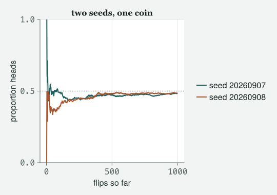

Before any model there is a file, a data frame, a picture, and a wall of red text. The wall of red is the part that makes people give up, so it is the part we teach first.
Draft
Draft. Every number and figure on this page comes from code that was actually run when the site was built; the prose is still being written.
Engines DRM.jl 0.7.1, development snapshot 4d9248f88 (Julia 1.10.0) · drmTMB 0.7.0 (R 4.6.0) Provenance Everything printed below — tables, figures and the four errors — came from running this chapter’s code from top to bottom when the site was built; nothing is typed from memory. The four errors are real errors, left in on purpose. Every random draw states its seed right where it is made. The single block of R output was run once by hand, in R, on 2026-09-07, on the same data file, and pasted in; the script is at data/ch1/ch1-r-box.R so you can run it yourself. Caveat The data are real: 171 house sparrows measured on Lundy Island in the author’s 2012 course, read directly from data/2012/MBodySize.csv (where the file came from is recorded in data/2012/README.md). Nothing here is simulated except the coin flips, which say so and carry their seeds.
What this chapter does not teach: installation. You need Julia running and this book’s packages available, and there are two honest routes. The hosted notebook needs nothing at all — open it and the first cell below works. A local install needs the two engines pulled from their repositories by URL, which is a paragraph of instructions that will change the day the two packages are listed in Julia’s public package catalogue and become a one-line Pkg.add. Writing that paragraph now means writing it twice, so this chapter does not. Everything from the first cell onward assumes you are already at a prompt.
If you are coming from R, there is one translate box below. It maps read.csv and the dplyr verbs onto their Julia equivalents, and it exists because of one place where the two languages do not merely differ but reverse: an argument order you will get wrong, in an error we meet later in the hour. Its R output was run once by hand, in R, on the same file the Julia code reads, and pasted in; the script is kept at data/ch1/ch1-r-box.R so you can run it yourself.
Objectives
By the end of this class you should be able to:
Read a CSV file (comma-separated values — a plain-text spreadsheet) into a data frame (a table with named columns, one row per bird), and say what using does that R’s library does not.
Look at a data frame four ways — its size, its first rows, its column types, its summary — and say what each of the four would catch that the others would miss.
Ask the rows a question: filter them, group them, and compute a mean per group.
Draw the data on its own, before any model, in the book’s house figure grammar.
Make a random draw that is the same tomorrow as it is today, and say precisely what the seed does and does not promise.
Read a Julia error message: find the line that says what you asked for, the line that says what exists, and the marker that points at the argument you got wrong.
The class
Itchy’s office, 9:00 am on the first morning. Four chairs, one
whiteboard, and a laptop belonging to TOTO on which Julia has been
installed for eleven minutes. MOMO has arrived from a decade of SPSS and
is already suspicious of the absence of menus. EDDIE, who has done this
before, is here for the coffee.
Itchy
Nobody fits anything today. Today you get a file into Julia, look at it,
draw it, and break it on purpose four times. That last part is not a
joke and it is not filler — it is the reason people give up on this
language in week one, and I would rather you met it here, with me, than
alone at eleven at night.
Momo
In SPSS I opened a file by opening a file.
Itchy
And in an hour you will open one with a line you can put in a paper,
which somebody else can run, which will give them the same numbers. That
is the trade. Toto, type this.
171 sparrows, 8 columns, measured on Lundy Island, and every one of them
was a real bird somebody held. Now the boring line, because it is the
one that goes wrong most.
Momo
The using line?
Itchy
The using line. In R, library(dplyr) says
“make dplyr’s functions visible”. using DataFrames says the
same thing and one thing more: it is also the moment Julia
compiles what it needs. The first using in
a session is slow — seconds, sometimes tens of seconds — and every one
after it in that session is instant. If you type it and the room goes
quiet, nothing is broken. That is the whole of the famous complaint
about this language, and it happens once.
Eddie
It is the only time all hour the machine looks stupider than R.
Itchy
It is, and I would rather say so than have you discover it. The other
line worth reading slowly is CSV.read. Two packages do that
job: CSV knows how to parse a file, DataFrames
knows what a table is, and you hand the first the second as an argument.
In R those live in one function. Here they are two ideas and you can see
the join.
Toto
And the path has two dots at the front.
Itchy
Because this chapter lives in book/ and the data live in
data/, so the path climbs out one level. Paths are relative
to the file being run, and that is what makes this page reproducible on
a machine that is not mine.
Look at it four ways
Itchy
Before anything else, look. Four different looks, and each one catches
something the other three do not.
first(sparrows, 5)
5×8 DataFrame
Row
BirdID
Sex
Tarsus
BillL
BillW
Tail
Wing
Weight
String7
String1
Float64
Float64
Float64
Float64
Float64
Float64
1
TA14502
F
18.4333
13.2667
6.53333
51.7667
71.5667
27.9667
2
TA14505
F
18.1
13.0
6.13333
57.3333
76.5
27.4
3
TA14506
F
18.45
13.05
6.2
55.5
75.0
25.15
4
TA14507
F
18.15
13.15
6.35
57.0
75.0
26.1
5
TA14509
M
18.2
13.05
6.25
59.875
78.25
25.175
Toto
There is a row of words under the column names.
Itchy
That row is the best thing on this page and R does not print it.
Tarsus is a Float64 — a number with a decimal
point. Sex is a String1 — text, one character
wide. BirdID is a String7. Julia is telling
you the type of every column before you have asked, and
type is what determines what you are allowed to do next. Half of the
errors in this class are a type you did not check.
Momo
In SPSS a column had a type too, and it lied to me constantly.
Itchy
Here it cannot lie, because it is not a label somebody set in a dialogue
box; it is what is actually in memory. If a column you expected to be
numeric prints as String, you have found a stray comma or
the word NA in row four hundred, and you have found it in
the first five seconds rather than in the middle of a model. Now the
summary.
It did not refuse; it left the arithmetic blank and still told you the
smallest and largest values, which for Sex are the two
letters and for BirdID are the first and last identifiers
alphabetically. That is describe being useful rather than
fussy. The column I actually care about is nmissing, and
every entry in it is zero, so this file has no holes in it. Say the
numbers out loud, Toto.
mean wing : 77.8523 mm
SD of wing : 2.0932 mm
tarsus range: 16.9000 to 20.5500 mm
Toto
The average wing is 77.85 millimetres.
Itchy
With a standard deviation — the typical distance of one bird from that
average — of 2.09, and tarsus — the leg bone, the standard measure of
how big a sparrow is — running from 16.9 to 20.55. Note the dot in
sparrows.Wing. That is how you reach a column, and what
comes back is a plain vector of numbers you can hand to any function in
the language. Not a special data-frame object with its own rules. A
vector.
Eddie
Which is why mean works on it without knowing what a data
frame is.
Itchy
Exactly why, and it is worth a moment. mean comes from
Statistics, sparrows.Wing comes from
DataFrames, and neither package has heard of the other.
They agree on Vector{Float64} and that is enough. You will
meet that pattern all the way to Class 10. Now the fourth look, which is
a picture, because six summary numbers can be identical for data of
wildly different shapes.
fig =Figure(size = (540, 360))ax =Axis(fig[1, 1]; xlabel ="wing (mm)", ylabel ="sparrows", title ="one column, drawn")# colour chosen by hand so the histogram matches the book's other figureshist!(ax, sparrows.Wing; bins =20, color = LIGHT.accent)vlines!(ax, [mean_wing]; linestyle =:dash, color = (:grey, 0.8))fig

Figure 1: The distribution of wing length, which the six summary numbers cannot show you.
Itchy
One hump, roughly symmetric, no second peak hiding out at the right-hand
end, nothing stranded at zero because somebody typed a missing value as
a number. The dashed line is the mean. Look at this before you believe
any summary; it takes four seconds and it is the cheapest thing in this
book.
The first figure of the grammar
Itchy
Now two columns at once. This book has a small set of house figures, and
the first of them is the one you draw before you have a model: the
data cloud.
fig_data_cloud(sparrows.Tarsus, sparrows.Wing; xlabel ="tarsus (mm)", ylabel ="wing (mm)", title ="171 Lundy sparrows, and no model")

Figure 2: The data cloud: wing length against tarsus, with nothing fitted to it.
Toto
There is obviously a line through it.
Itchy
There is obviously something through it, and the entire point
of drawing this before Class 2 is that you saw the pattern with your own
eyes and not through a p-value — the number software gives you
for how surprising a pattern this strong would be if there were really
nothing there. It arrives in Class 2; today you do not need it. Next
week we put a line there and it will be the right thing to do. But the
habit — cloud first, model second — is the habit that stops you fitting
a straight line to something that is plainly a curve, which is a mistake
I have watched people publish.
Momo
And fig_data_cloud is not a Julia function.
Itchy
It is a Julia function, it is just ours, and it lives in
tools/figures.jl — the file the first cell included. It
wraps the plotting library and the book’s colours so that every figure
in every chapter looks like it came from the same book. When you write
your own, use whatever you like; when you read this book, that is what
the house style is made of.
Ask the rows a question
Itchy
Data frames earn their keep when you ask them something. Three verbs,
and then a comparison to R that I will not repeat all year.
males : 82
females: 89
total : 171 (should be 171)
Toto
Two different ways to do the same thing.
Itchy
Two ways with different characters. filter is base Julia’s
own verb and it takes a function first and the thing to
be filtered second —
filter(row -> row.Sex == "M", sparrows). That little
arrow makes an anonymous function: “given a row, is its Sex
equal to M”. subset is the DataFrames verb,
takes the frame first, and reads closer to dplyr. Use
either. Do not mix them up in the same script and expect to be able to
read it in a year.
Momo
And you get 82 and 89, which add up.
Itchy
Which add up to 171, and I want you to notice that I checked. Every time
you split something, add the pieces back up. It costs one line and it
has caught more of my mistakes than any diagnostic in Class 5. Now the
grouped question, which is the one you will actually use.
Read that as three steps stuck together. groupby cuts the
frame into piles by a column. combine walks the piles and
computes something on each. And the arrow pairs say what to compute and
what to call it: take Wing, apply mean, name
the answer mean_wing. nrow => :n counts the
pile.
Toto
Males have longer wings.
Itchy
Males average 79.25 millimetres, females 76.57, a gap of 2.68. And now
the sentence I want you to be uncomfortable with: that gap is
not a finding yet. It is two averages. It has no interval on it
— no range of values it could plausibly be — it does not know that males
are also bigger overall, and it cannot tell you whether the difference
is in the wing or in the whole bird. Every one of those repairs is a
chapter. Today you have two numbers, honestly computed, and that is
genuinely all you have. Draw it.
fig =Figure(size = (540, 380))ax =Axis(fig[1, 1]; xlabel ="tarsus (mm)", ylabel ="wing (mm)", title ="the same cloud, with sex marked")# the shared band goes down FIRST, low-opacity, so every point still sits on# top of it — this is band_lo:band_hi from the cell above, drawn rather than# only stated, so "n_band of 171 birds fall in a range both sexes occupy" is# something the reader sees, not just a number in the prosehspan!(ax, band_lo, band_hi; color = (LIGHT.muted, 0.15), label ="wing range shared by both sexes")scatter!(ax, females.Tarsus, females.Wing; markersize =7, label ="female")scatter!(ax, males.Tarsus, males.Wing; markersize =7, marker =:diamond, label ="male")hlines!(ax, [wing_f]; linestyle =:dash, color =Cycled(1))hlines!(ax, [wing_m]; linestyle =:dash, color =Cycled(2))# legend outside the plot, so it cannot sit on top of the points it labelsfig[1, 2] =Legend(fig, ax; framevisible =false)fig

Figure 3: The same cloud, split by sex: the shaded band is the wing-length range both sexes share, the dashed lines are the two group means.
Momo
The two clouds are separated, but they are also sitting in each other’s
laps.
Itchy
Which is exactly the right way to be confused, so let me make the
confusion into two numbers instead of one. At the level of
averages the two piles are quite well separated: only 2
of the 89 females have a wing longer than the average male, and only 5
of the 82 males have one shorter than the average female. But at the
level of an individual bird, 138 of the 171 sparrows
have a wing length that occurs in both sexes.
Toto
So you could not sex a bird from its wing.
Itchy
Not most birds, no, and that is the whole distinction. A difference
between group averages can be clean, real and worth reporting, and still
leave most single animals inside a range both groups occupy. Those are
two different claims and people run them together constantly. Hold the
picture; it is what sits underneath half the arguments in the literature
about effect sizes — how big a difference is, as opposed to whether one
exists.
↔︎ TRANSLATE: the same eight lines, in R
This is the one box of its kind in this chapter, and it earns its place on a single row of the table below. Most of these lines merely differ between the languages, which costs you a lookup. One of them reverses, which costs you an error message you will not understand: dplyr::filter(data, condition) takes the data first, and Julia’s filter(function, data) takes the function first. Every R user types it the wrong way round once. You will do it in about five minutes, on purpose.
you want
in R
in Julia
load the tools
library(dplyr)
using DataFrames
read a CSV
read.csv("f.csv")
CSV.read("f.csv", DataFrame)
how big is it
nrow(d), ncol(d)
nrow(d), ncol(d)
first rows
head(d, 5)
first(d, 5)
summarise
summary(d)
describe(d)
one column
d$Wing
d.Wing
keep some rows
filter(d, Sex == "M")
filter(row -> row.Sex == "M", d)
group and average
group_by(Sex) %>% summarise(m = mean(Wing))
combine(groupby(d, :Sex), :Wing => mean => :m)
The R output below was run once by hand, in R, on 2026-09-07, on the same archived file this chapter reads, and pasted in here; it is not re-run when the page is made. The script is kept at data/ch1/ch1-r-box.R; its captured output is at data/ch1/ch1-r-box.txt. Compare its numbers with the Julia numbers above: they are the same birds, so they are the same numbers.
# Run once in R on 2026-09-07 and pasted in; not re-run with the page. Command:# Rscript data/ch1/ch1-r-box.R# R 4.6.0, dplyr 1.2.1, reading data/2012/MBodySize.csvnrow:171 ncol:8 BirdID Sex Tarsus BillL BillW Tail Wing Weight1 TA14502 F 18.4333313.266676.53333351.7666771.5666727.966672 TA14505 F 18.1000013.000006.13333357.3333376.5000027.400003 TA14506 F 18.4500013.050006.20000055.5000075.0000025.15000 Tarsus Wing Min. :16.90 Min. :71.571st Qu.:18.151st Qu.:76.45 Median :18.63 Median :77.90 Mean :18.61 Mean :77.853rd Qu.:19.113rd Qu.:79.25 Max. :20.55 Max. :84.00mean wing:77.85234males:82# A tibble: 2 x 3 Sex mean_wing n<chr><dbl><int>1 F 76.6892 M 79.282
Reading the red
Itchy
Right. Everybody close whatever else is open. This section is the reason
this class exists on the first morning rather than the fifth, and it is
the single most cited gap in every book that tries to teach this
language: nobody teaches you to read the errors. People do not abandon
Julia because the statistics are hard. They abandon it because they hit
thirty lines of red text with a word like MethodError in
it, feel stupid, and go back to R. Nothing in those thirty lines is
trying to make you feel stupid. Most of it is Julia telling you, in
detail, what it does know how to do.
Momo
In SPSS an error was one sentence.
Itchy
One sentence which told you nothing. Julia gives you a paragraph which
tells you everything, and the skill is knowing which line of the
paragraph matters. Four failures, in the order you will meet them. Toto,
misspell a column.
sparrows.Wingg
ArgumentError: column name "Wingg" not found in the data frame; existing most similar names are: "Wing"
(stack trace omitted)
Itchy
One line of message, then — in your own REPL — a list headed
Stacktrace. This book trims that list from its printed
output, so below you will see the placeholder
(stack trace omitted); ignore it either way. Read the one
line to its end. ArgumentError — you handed a function an
argument it cannot use.
column name "Wingg" not found in the data frame — that is
the fact. And then the part people skip because they have already
started retyping:
existing most similar names are: "Wing".
Julia went through your column names, worked out how close each one was
to what you typed, and handed back the near miss. The fix is inside the
error.
Toto
So the last clause is the answer.
Itchy
The last clause is the answer, and remember that it is only there
because somebody could compute it. Watch what happens when nobody can.
Momo, load a package.
usingDataFrame
ArgumentError: Package DataFrame not found in current path.
- Run `import Pkg; Pkg.add("DataFrame")` to install the DataFrame package.
(stack trace omitted)
Momo
But we are already using data frames.
Itchy
You are, and the package is called DataFrames, with an
s. Now read the two lines, and read them differently from
each other. Line one is a fact: there is no package by
that name where Julia looks. Line two,
Run import Pkg; Pkg.add("DataFrame"), is a
guess — it is the sentence Julia prints for every
missing name, and it does not know whether you failed to install
something or misspelled something you already have. Here it is a
misspelling, so following the advice would send you hunting a package
that does not exist while the one you want sits already loaded.
Eddie
That is the opposite of the column error.
Itchy
It is exactly the opposite, and that is why I put them next to each
other. In the first, Julia checked the near misses and told you. In the
second, it did not check and offered a default. The last line of
an error is not automatically the fix. Sometimes it is a
diagnosis, sometimes it is a suggestion, and telling them apart is the
skill. In your own REPL, look at the stack trace under this one too,
because it is doing something useful by being useless: every frame in it
is inside Julia’s own package-loading machinery, and not one of them is
a line you wrote — this page trims it to
(stack trace omitted), but that is what it hides. When a
stack trace contains none of your code, the mistake is in what you
asked for, not in what you did with it. Toto, add a number to a
piece of text.
That is the wall of red, and it has three parts. Part one, the
first line:
no method matching +(::Float64, ::String). That is what
you asked for, stated in types — you asked to add a number to a
piece of text. Part two, under
Closest candidates are: — that is what
exists, the versions of + that came nearest to
matching. Part three, inside each candidate, the
argument that failed to match is printed in red. At a
plain terminal with no colour, the same thing appears as the word
!Matched written in front of that argument; it is the same
marker either way.
Momo
Then the red should tell me which of my two arguments was wrong.
Itchy
It should, and on this particular error it does not, and I want you to
see that on the first morning rather than the fifth. Look at what the
candidates actually are: a four-argument version of +, and
two from a package about automatic differentiation you have never heard
of and did not ask for. The red on the first one sits on arguments you
never even supplied. This is the candidate list being
useless, and it is useless for a specific, predictable reason:
+ has hundreds of methods, so “the closest three” are close
by a similarity rule and not by anything to do with your problem.
Toto
Then what do I read?
Itchy
The first line, and then you stop, because the first line is already a
complete diagnosis: ::String. Your second argument is text.
And it is text because you wrote "0.5" with quotation marks
round it, which is a piece of writing that looks like a number and is
not one. That is not a contrived error, either — it is exactly what
happens the first time you read a spreadsheet with a stray comma in a
numeric column, and the type row in first(sparrows, 5) is
where you would have caught it an hour earlier. The rule is:
when the function is enormous and general, read the first line. When it
is small and specific, the candidate list is worth its weight.
Which brings us to the one that is specific to arriving here from R.
It is, and now you have seen the punishment. Same three parts, and this
time the candidate list earns its keep, because filter is a
small specific function rather than +. First line:
no method matching filter(::DataFrame, ::var"#..."), and
that unreadable var"#..." is simply Julia’s internal name
for the anonymous function you typed — you never named it, so Julia made
a name up. Then the candidates. Now do what you just learned: find the
red.
Toto
It is on the second argument in all three of them. And the first
argument is ::Any every time.
Itchy
Which together is a complete diagnosis, and you can read it without
knowing one thing about filter. Every
version of this function will take anything at all in slot one, and
every version insists on a collection in slot two. So
the thing that failed is your second argument, and your second argument
was a function. Your collection and your function are in the wrong
slots. Turn them round, which is the call you already wrote correctly
ten minutes ago, and it works.
Momo
I would have stared at that for an hour.
Itchy
Everybody does, once. Here is the routine, three questions, always in
this order. What did I ask for? — the first line, in
types. What exists? — the candidate list, when the
function is specific enough for the list to mean anything. Which
argument is wrong? — the one printed in red, or marked
!Matched where there is no colour. Almost every Julia error
you meet this year answers at least the first of those, and most answer
all three, and reading them in that order means you never have to
understand the rest of the wall.
Toto
Every one of ours just says (stack trace omitted). What was
under it?
Itchy
A list of who called whom, innermost call first — this page trims it,
but in your own REPL it is there. The line that points at
you is the one that says top-level scope,
which in a notebook names the cell you ran. Everything above it is the
machinery you called on the way down. For a mistake made at the prompt,
that one line is all of the stack trace that is yours.
Eddie
And when the mistake is not yours?
Itchy
Then top-level scope is at the bottom as usual, but the
interesting frames are the ones above it, inside somebody’s package —
and you have found either a bug or an assumption you did not know you
were breaking. That is a good day. Not today.
A number that is the same tomorrow
Itchy
Last piece. Some of what this book does is random — a jitter in a plot,
a residual in Class 3 (a residual is what is left of each bird after the
model has had its say), a whole appendix of simulations — and random is
a problem for a book, because a book has to say the same thing twice. So
we make randomness that repeats. MersenneTwister is a
random-number generator, named after the arithmetic inside it; the
number in the brackets is the seed, the starting point it counts from.
rng_sim =MersenneTwister(20260907)# A coin, flipped n times. The generator is a keyword with no default, so it# is impossible to call this function and forget to say which stream of# randomness you meant. That is the house rule, in one line of code.flip(n; rng) =rand(rng, Bool, n)n_flips =1000run_a =flip(n_flips; rng = rng_sim)p_a =mean(run_a)@printf("flips: %d proportion heads: %.4f\n", n_flips, p_a)
flips: 1000 proportion heads: 0.4830
Toto
I got 0.483, which is not a half.
Itchy
It is not a half, and it should not be. 1000 flips of a fair coin lands
near a half, not on it, and how near is a question with an actual answer
that Appendix A works out. What matters this morning is the other thing:
run it again.
same seed : proportion 0.4830 identical draws: true
seed + one : proportion 0.4840 identical draws: false
Momo
The same seed gave the same number exactly.
Itchy
Not the same number. The same draws — all 1000
of them, in the same order, which is why the proportion could not help
but agree. And one digit later, at the seed one greater, you get 0.484
instead of 0.483, from a completely different set of flips. So be
precise about what a seed buys you: a seed promises
reproducibility, not correctness. It makes your accident the
same accident every time, so that somebody else can have your accident
too. It does not make the accident representative. If your conclusion
changes when you change the seed, the seed was doing your arguing for
you.
Eddie
Which is why you would run it at many seeds.
Itchy
Which is exactly why, and that is Appendix A’s whole subject. Draw the
two runs.
running(v) =cumsum(v) ./ (1:length(v))fig =Figure(size = (540, 380))ax =Axis(fig[1, 1]; xlabel ="flips so far", ylabel ="proportion heads", title ="two seeds, one coin")hlines!(ax, [0.5]; linestyle =:dot, color = (:grey, 0.8))lines!(ax, 1:n_flips, running(run_a); linewidth =2, label ="seed 20260907")lines!(ax, 1:n_flips, running(run_c); linewidth =2, linestyle =:dash, label ="seed 20260908")# full 0-1 range: the first few flips really do sit at 0 or 1, and clipping them# to a narrower window would hide exactly the wildness this figure is about.ax.limits = (nothing, nothing, 0.0, 1.0)fig[1, 2] =Legend(fig, ax; framevisible =false)fig

Figure 4: Running proportion of heads for two seeds. Both wander, both settle, neither lands on a half.
Itchy
Both lines are wild on the left, where a handful of flips can say
anything, and both calm down towards the dotted line without ever quite
arriving. That picture is the reason a small sample can tell you almost
anything you want to hear, and it is the same picture underneath every
confidence interval in this book — the range of values a sample leaves
you unable to rule out. Appendix A turns it into arithmetic.
The formula you are not going to fit
Itchy
One last thing, and then you are free. Next week’s model has a shape,
and I want you to have seen the shape before you meet the model. In
Julia a model formula is a value, like a number or a
vector, that you can make and look at on its own.
It printed the formula back at me and called both columns unknown.
Itchy
Read that word unknown slowly, because it is the whole
lesson. Julia made an object that says “wing, as a function of tarsus”,
and it is sitting there in f knowing nothing about
sparrows. It has not seen the data — it cannot have, you never handed it
any — so it does not yet know whether Wing is a number, a
category, or a column that does not exist. unknown is not a
failure. It is the formula honestly reporting that it has not been
introduced to anybody yet. Now put it in the box this book uses.
You did not, and that is the most useful thing on this page.
bf is the “big formula” box, and it always has two slots.
The mu slot holds what you wrote: the mean of wing depends
on tarsus. The sigma slot holds 1, which means
“the spread is one number, the same for every bird” — a constant, and
you never chose it, and today you cannot even see why you would want to.
Class 4 is the week you put something in that second
slot, and the box has been quietly holding it open since your
first hour. The nothing at the end is a third slot, for a
second response column — used when the response is a count of successes
out of so many trials, which a later class reaches — and it stays empty
until then.
Toto
So what do I do with it?
Itchy
Nothing, today. You hand it to drm with a family — the
shape of distribution you are willing to assume for the response, Normal
today, others from Class 3 on — and some data, and it becomes a fitted
model, and that is Class 2’s first ten minutes. I am stopping here on
purpose: you can now get a file in, look at it four ways, ask it a
question, draw it, make a random number that behaves, and read the
message when it breaks. That is base camp. Everything above it is one
climb.
Summary
Stats stuff
Look before you model, four ways, and know what each look is for. The size tells you the file is the file you meant. The first rows tell you the types, which is where a stray comma in a numeric column shows up as String. The summary tells you the ranges and the missing counts. The picture tells you the shape, which the summary cannot: identical means and standard deviations are consistent with wildly different distributions.
Draw the cloud before you fit anything to it. The habit costs four seconds and prevents fitting a straight line to something that is visibly not straight. Class 2 draws the same cloud again before it puts a line through it, and every chapter after that keeps the order.
A difference between group means is not yet a finding, and a clean difference between means is not a clean difference between animals. Ours was a gap of 2.7 millimetres between male and female wings, and it is clean at the level of averages: only 2 of the 89 females beat the average male. It is not clean at the level of birds: most of the sample sits inside a band of wing lengths that both sexes occupy, so you could not sex a bird from its wing. Report the first without implying the second. And everything that turns the gap into a claim — an interval, controlling for overall body size, admitting that repeated measurements on one bird are not independent — is a later chapter.
When you split a dataset, add the pieces back up. One line, and it catches the filter that silently dropped the rows where a value was missing.
A seed promises reproducibility, not correctness. The same seed gives the same draws in the same order, so anyone can reproduce your accident exactly. A different seed gives a different accident with a similar answer. If a conclusion moves when the seed moves, the seed is doing the arguing, and the repair is many seeds, which is Appendix A.
Reading an error is a statistical skill, not a computing chore. The evidence is not folklore: developers spend a substantial fraction of a debugging task simply reading error messages, and reading them is about as hard as reading source code (Barik et al. 2017). Time spent learning the shape of these messages is time bought back on every chapter after this one.
Julia stuff
using Pkg1, Pkg2: makes packages visible, and compiles what it needs the first time in a session. The pause on first use is normal and happens once. R’s library is the closest analogue.
CSV.read("path.csv", DataFrame): two packages doing two jobs — CSV parses, DataFrames holds. Paths are relative to the file being executed, so a chapter in book/ reaches the data with "../data/...".
nrow(df), ncol(df), names(df): size and column names.
first(df, 5): the first rows and the column types. Read the type row; it is the cheapest data check in this book and R prints no equivalent.
describe(df, :mean, :std, :min, :max, :nmissing): the per-column summary. It does not fall over on text columns, and nmissing is the column to read first.
df.Wing: a column, returned as a plain Vector. Any function that takes a vector takes it, which is why mean from Statistics works on a DataFrames column without either package knowing about the other.
filter(row -> row.Sex == "M", df): function first, data second. This is reversed from dplyr::filter and it is the argument-order slip in the error section.
subset(df, :Sex => ByRow(==("F"))): the DataFrames verb, data first, closer to dplyr’s reading order.
combine(groupby(df, :Sex), :Wing => mean => :mean_wing, nrow => :n): group, then compute per group. The double arrow reads “take this column, apply this function, call the answer this”. nrow => :n counts each group.
fig_data_cloud(x, y; xlabel, ylabel, title) from tools/figures.jl: the house data cloud, the first figure of the grammar and the only one you can draw before you have a model. The file also sets the book’s theme through tools/theme_itchy.jl; set_theme!(theme_itchy(:light)) is what makes a figure look like it belongs to this book.
Figure, Axis, scatter!, lines!, hist!, hlines!, vlines!, axislegend: the CairoMakie verbs the house figures are built from, for when you want one that is not in the grammar. The exclamation mark is a Julia convention meaning “this modifies the thing you gave it” — here, it draws onto an existing axis.
@formula(y ~ x): a value, not an action. You can make one, print it, and pass it around without any data in sight.
bf(@formula(y ~ x)): the “big formula” box drm takes. It always shows two slots — mu holds what you wrote, sigma holds the constant 1 until Class 4 puts something in it.
MersenneTwister(seed): a named stream of random numbers. Every random draw in this book comes from one of these, handed in explicitly. Never Random.seed!, which sets a hidden switch for the whole session and makes your results depend on what else ran before them.
rand(rng, Bool, n): n coin flips from the generator rng. mean of a Bool vector is the proportion of trues.
f(n; rng): a keyword argument with no default. Writing your own random helpers this way makes it impossible to forget the generator, which is the mistake that silently makes a script give a different answer every run.
Three calls you will meet, and cannot use today. Nothing fitted a model today, so nothing today can call aic(fit) (the Akaike information criterion, a score that trades fit against complexity, lower is better — Class 2’s referee when you add a predictor), residuals(fit; type = :quantile, rng = rng_sim) (a residual rescaled so a good model’s residuals look like a standard bell curve — Class 3’s diagnostic, which works for every family) or simulate(fit; nsim = 200, rng = rng_sim) (the simulation thread, from Class 2 to Appendix A). They are listed here for one reason: the keyword you learned this morning is the same keyword in all three. Hand the generator in; never let a function reach for the global one.
Errors, in three questions.What did I ask for? — the first line, written in types. What exists? — the list under Closest candidates are:. Which argument is wrong? — the one printed in red inside each candidate (the same marker appears as the word !Matched in front of that argument wherever there is no colour, such as a plain terminal or a log file).
The candidate list is only worth reading for a specific function. For filter, three candidates were enough to prove the argument order was wrong. For +, which has hundreds of methods, the three “closest” were irrelevant and the red marker pointed at arguments that were never supplied. Read the first line always; read the candidates when the function is narrow.
The Stacktrace is who called whom, innermost first — this page trims it to (stack trace omitted), but in your own REPL it is there. The frame that points at your own code is the one saying top-level scope, at the bottom, and in a notebook it names the cell. A stack trace containing none of your code — as the missing-package error’s does — says the mistake is in what you asked for, not in what you did with it.
The last line of an error is not automatically the fix.ArgumentError: column name ... existing most similar names are: is a diagnosis, computed by checking your columns. Package X not found ... Run import Pkg; Pkg.add("X") is the default suggestion printed for every missing name, checked against nothing, and it is wrong whenever the real problem was a typo.
Further reading
Graded by depth. References checked 2026-09-07.
Bezanson, J., Edelman, A., Karpinski, S. & Shah, V. B. (2017) “Julia: A Fresh Approach to Numerical Computing”, SIAM Review 59:65–98. doi:10.1137/141000671. The language, explained by the people who built it. Read it for one idea — that a function is a collection of methods chosen by the types of all its arguments — because that idea is exactly what the Closest candidates list in this chapter’s errors is printing.
Bouchet-Valat, M. & Kamiński, B. (2023) “DataFrames.jl: Flexible and Fast Tabular Data in Julia”, Journal of Statistical Software 107(4). doi:10.18637/jss.v107.i04. The reference for everything in this chapter’s middle third, by the maintainers. Read the sections on groupby/combine when the double-arrow pairs stop looking like syntax and start looking like a grammar.
Barik, T., Smith, J., Lubick, K., Holmes, E., Feng, J., Murphy-Hill, E. & Parnin, C. (2017) “Do Developers Read Compiler Error Messages?”, 2017 IEEE/ACM 39th International Conference on Software Engineering (ICSE), 575–585. doi:10.1109/ICSE.2017.59. An eye-tracking study of 56 people fixing real defects. Its findings are the reason this class spends an hour of its first morning on red text: participants did read the messages, reading them was about as hard as reading source code, that difficulty predicted whether they solved the task, and it took 13–25% of their total time.
Becker, B. A., Denny, P., Pettit, R., Bouchard, D., Bouvier, D., Harrington, B., Kamil, A., Karkare, A., McDonald, C., Osera, P.-M., Pearce, J. L. & Prather, J. (2019) “Compiler Error Messages Considered Unhelpful: The Landscape of Text-Based Programming Error Message Research”, ITiCSE-WGR ’19, 177–210. doi:10.1145/3344429.3372508. Half a century of research on error messages, gathered in one place. Read it if you ever have to teach this to somebody else: it is a survey of what has been tried, including what does not work.
Danisch, S. & Krumbiegel, J. (2021) “Makie.jl: Flexible high-performance data visualization for Julia”, Journal of Open Source Software 6(65):3349. doi:10.21105/joss.03349. The plotting library under every figure in this book. Worth skimming once so that Figure, Axis and the trailing exclamation marks stop being incantations.
The Julia manual, “Getting Started” and “Noteworthy Differences from R” (https://docs.julialang.org/). Not a paper, and the single most useful thing on this list for its first week. The differences page is a list of exactly the traps this chapter’s translate box has room for only one of.
Exercises
Use your own organism where one is named. For every question, paste your code and then explain in your own words what each line does, as if to somebody who has not opened Julia.
Get your own file in. Read one of your own CSV files with CSV.read. Report nrow, ncol, and names. Then run first(df, 5) and write one sentence about the type row: is every column the type you expected? If one is not, say which and guess why before you check.
Four looks. Run describe(df, :mean, :std, :min, :max, :nmissing) on the same file. Report the nmissing column. Then draw a histogram of one numeric column. Name one thing the histogram shows that the summary line for the same column does not.
Split and add up. Filter your data into two groups on some column, using filter once and subset once. Report both counts and check that they sum to nrow(df). If they do not, find out why before you go on — the reason is worth more than the exercise.
A group mean, and its limits. Use combine(groupby(df, :Group), :y => mean => :mean_y, nrow => :n) to get a mean per group. Then draw the same data as a cloud with the groups marked. Write two sentences: one saying what the numbers say, one saying what the picture says that the numbers do not.
Toto’s water fleas. Draw a data cloud with fig_data_cloud for two of Toto’s measurements. Do not fit anything. Then write down, in one sentence, what you expect a straight line through it to do — and keep the sentence, because Class 2 will check it.
Break it four ways. On your own data, reproduce each of this chapter’s four errors: a misspelled column, a package name that does not exist, a number added to a piece of text, and filter with the arguments the wrong way round. For each, quote the one line of the message that told you what to fix, and say whether that line was a diagnosis or a guess.
A fifth error, unplanned. Make a mistake this chapter did not cover — any mistake — and answer the three questions on it: what did you ask for, what exists, which argument was wrong. If the message does not answer all three, say which one is missing and what you had to do instead.
Two seeds. Adapt the coin-flip cell to your own choice of seeds. Report the proportion of heads for a seed of your choosing, the proportion for the same seed run a second time, and the proportion for that seed plus one. Then answer in one sentence: which of those three numbers was guaranteed to be equal to which, and why “the same seed gives the same answer” is a weaker statement than what actually happened.
The box that is already holding a slot open. Write bf(@formula(y ~ x)) for a response and a predictor from your own data and print it. Say what is in the mu slot, what is in the sigma slot, and — in one sentence, guessing is fine — what kind of scientific question would make you want to put something other than a constant in the second one.